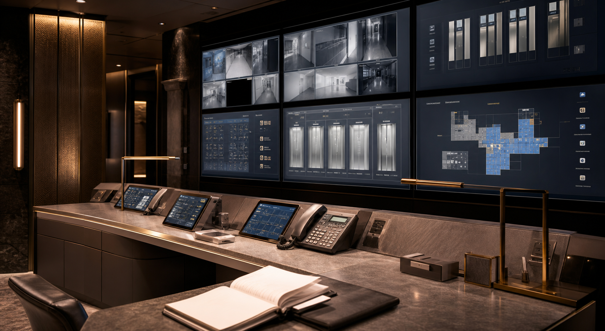

避難経路
非常階段は各階東西に設置しています。催事混雑時は係員の誘導に従ってください。

SAFETY MANAGEMENT
防災センターでは、館内巡回、設備監視、避難経路の確認、閉店後の出入口管理を行っています。お客様の安全確保のため、点検情報を随時更新しています。
非常階段は各階東西に設置しています。催事混雑時は係員の誘導に従ってください。
北側エレベーターは、閉店後に運転記録と扉開閉記録を確認しています。
売場、地下連絡通路、屋上庭園は、閉店後に順次巡回します。
22:05 食品街施錠
22:14 地下連絡通路確認
22:18 北側エレベーター停止確認
22:31 防災センター記録更新